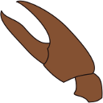

|  |
Crayfish PluginVersion %CRAYFISH_VERSION% |
The Crayfish Plugin is a collection of tools for hydraulic modellers working with TUFLOW, BASEMENT, ISIS 2D and other modelling packages. It aims to use QGIS as an efficient and effective pre and post-processor.
Check out the Crayfish resources page on our website for more information.